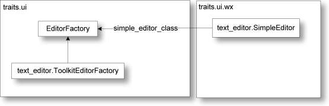
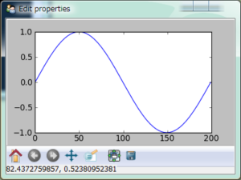
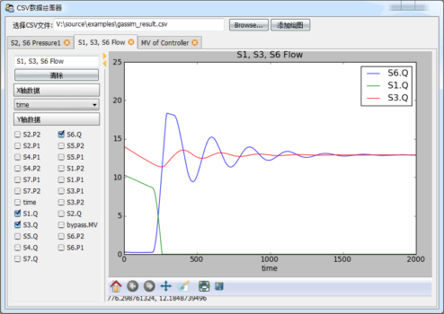
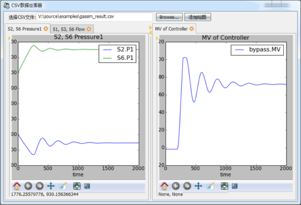
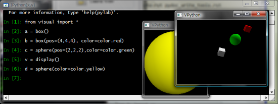

设计自己的Trait编辑器
在前面的章节中我们知道，每种trait属性都对应有缺省的trait编辑器，如果在View中不指定编辑器的话，将使用缺省的编辑器构成界面。每个编辑器都可以对应有多个后台，目前支持的后台界面库有pyQt和wxPython。每种编辑器都可以有四种样式：simple, custom, text, readonly。
traitsUI为我们提供了很丰富的编辑器库，以至于我们很少有自己设计编辑器的需求，然而如果我们能方便地设计自己的编辑器，将能制作出更加专业的程序界面。
本章节将简要介绍trait编辑器的工作原理；并且制作一个新的trait编辑器，用以显示matplotlib提供的绘图控件；然后以此控件制作一个通用的绘制CSV文件数据图像的小工具。
Trait编辑器的工作原理
我们先来看下面这个小程序，它定义了一个TestStrEditor类，其中有一个名为test的trait属性，其类型为Str，在view中用Item定义要在界面中显示test属性，但是没有指定它所使用的编辑器(通过editor参数)。当执行t.configure_traits()时，traits库将自动为我们挑选文本编辑框控件作为test属性的编辑器：
from enthought.traits.api import *
from enthought.traits.ui.api import *
class TestStrEditor(HasTraits):
test = Str
view = View(Item("test"))
t = TestStrEditor()
t.configure_traits()
使用文本编辑框控件编辑test属性
Traits库的路径
下面的介绍需要查看traits库的源程序，因此首先你需要知道它们在哪里：
traits: site-packages\Traits-3.2.0-py2.6-win32.egg\enthought\traits, 以下简称 %traits%
traitsUI: site-packages\Traits-3.2.0-py2.6-win32.egg\enthought\traits\UI, 以下简称 %ui%
wx后台界面库: site-packages\TraitsBackendWX-3.2.0-py2.6.egg\enthought\traitsui\wx, 以下简称 %wx%
Str对象的缺省编辑器通过其create_editor方法获得：
>>> from enthought.traits.api import *
>>> s = Str()
>>> ed = s.create_editor()
>>> type(ed)
<class 'enthought.traits.ui.editors.text_editor.ToolkitEditorFactory'>
>>> ed.get()
{'auto_set': True,
'custom_editor_class': <class 'enthought.traits.ui.wx.text_editor.CustomEditor'>,
'enabled': True,
'enter_set': False,
'evaluate': <enthought.traits.ui.editors.text_editor._Identity object at 0x0427F1B0>,
'evaluate_name': '',
'format_func': None,
'format_str': '',
'invalid': '',
'is_grid_cell': False,
'mapping': {},
'multi_line': True,
'password': False,
'readonly_editor_class': <class 'enthought.traits.ui.wx.text_editor.ReadonlyEditor'>,
'simple_editor_class': <class 'enthought.traits.ui.wx.text_editor.SimpleEditor'>,
'text_editor_class': <class 'enthought.traits.ui.wx.text_editor.SimpleEditor'>,
'view': None}
create_editor方法的源代码可以在%traits%trait_types.py中的BaseStr类的定义中找到。create_editor方法得到的是一个text_editor.ToolkitEditorFactory类：
enthought.traits.ui.editors.text_editor.ToolkitEditorFactory
在%ui%editorstext_editor.py中你可以找到它的定义，它继承于EditorFactory类。EditorFactory类的代码在%ui%editor_factory.py中。EditorFactory类是Traits编辑器的核心，通过它和后台界面库联系起来。让我们来详细看看EditorFactory类中关于控件生成方面的代码：
class EditorFactory ( HasPrivateTraits ):
# 下面四个属性描述四个类型的编辑器的类
simple_editor_class = Property
custom_editor_class = Property
text_editor_class = Property
readonly_editor_class = Property
# 用simple_editor_class创建实际的控件
def simple_editor ( self, ui, object, name, description, parent ):
return self.simple_editor_class( parent,
factory = self,
ui = ui,
object = object,
name = name,
description = description )
# 这是类的方法，它通过类的以及父类自动找到与其匹配的后台界面库中的控件类
@classmethod
def _get_toolkit_editor(cls, class_name):
editor_factory_classes = [factory_class for factory_class in cls.mro()
if issubclass(factory_class, EditorFactory)]
for index in range(len( editor_factory_classes )):
try:
factory_class = editor_factory_classes[index]
editor_file_name = os.path.basename(
sys.modules[factory_class.__module__].__file__)
return toolkit_object(':'.join([editor_file_name.split('.')[0],
class_name]), True)
except Exception, e:
if index == len(editor_factory_classes)-1:
raise e
return None
# simple_editor_class属性的get方法，获取属性值
def _get_simple_editor_class(self):
try:
SimpleEditor = self._get_toolkit_editor('SimpleEditor')
except:
SimpleEditor = toolkit_object('editor_factory:SimpleEditor')
return SimpleEditor
EditorFactory的对象有四个属性保存后台编辑器控件的类：simple_editor_class, custom_editor_class, text_editor_class, readonly_editor_class。例如前面例子中的ed对象的simple_editor_class为<class 'enthought.traits.ui.wx.text_editor.SimpleEditor'>，我们看到它用的是wx后台界面库中的text_editor中的SimpleEditor类，稍后我们将看看其内容。
EditorFactory是通过其类方法_get_toolkit_editor计算出所要用后台界面库中的类的。由于_get_toolkit_editor是类方法，它的第一个参数cls就是类本身。当调用text_editor.ToolkitEditorFactory._get_toolkit_editor()时，cls就是text_editor.ToolkitEditorFactory类。通过调用cls.mro获得cls以及其所有父类，然后一个一个地查找，从后台界面库中找到与之匹配的类，这个工作由toolkit_object函数完成。其源代码可以在%ui%toolkit.py中找到。
因为后台界面库中的类的组织结构和traits.ui是一样的，因此不需要额外的配置文件，只需要几个字符串替代操作就可以将traits.ui中的EditorFactory类和后台界面库中的实际的编辑器类联系起来。下图显示了traits.ui中的EditorFactory和后台界面库的关系。

traits.ui中的EditorFactory和后台界面库的关系
wx后台界面库中定义了所有编辑器控件，在 %wx%text_editor.py 中你可以找到产生文本框控件的类 text_editor.SimpleEditor。类名表示了控件的样式：simple, custom, text, readonly，而其文件名(模块名)则表示了控件的类型。下面是 text_editor.SimpleEditor的部分代码：
class SimpleEditor ( Editor ):
# Flag for window styles:
base_style = 0
# Background color when input is OK:
ok_color = OKColor
# Function used to evaluate textual user input:
evaluate = evaluate_trait
def init ( self, parent ):
""" Finishes initializing the editor by creating the underlying toolkit
widget.
"""
factory = self.factory
style = self.base_style
self.evaluate = factory.evaluate
self.sync_value( factory.evaluate_name, 'evaluate', 'from' )
if (not factory.multi_line) or factory.password:
style &= ~wx.TE_MULTILINE
if factory.password:
style |= wx.TE_PASSWORD
multi_line = ((style & wx.TE_MULTILINE) != 0)
if multi_line:
self.scrollable = True
if factory.enter_set and (not multi_line):
control = wx.TextCtrl( parent, -1, self.str_value,
style = style | wx.TE_PROCESS_ENTER )
wx.EVT_TEXT_ENTER( parent, control.GetId(), self.update_object )
else:
control = wx.TextCtrl( parent, -1, self.str_value, style = style )
wx.EVT_KILL_FOCUS( control, self.update_object )
if factory.auto_set:
wx.EVT_TEXT( parent, control.GetId(), self.update_object )
self.control = control
self.set_tooltip()
真正产生控件的程序是在init方法中，此方法在产生界面时自动被调用，注意方法名是init，不要和对象初始化方法__init__搞混淆了。
制作matplotlib的编辑器
Enthought的官方绘图库是采用Chaco，不过如果你对matplotlib库更加熟悉的话，将matplotlib的绘图控件嵌入TraitsUI界面中将是非常有用的。下面先来看一下嵌入matplotlib控件的完整源代码：
# -*- coding: utf-8 -*-
# file name: mpl_figure_editor.py
import wx
import matplotlib
# matplotlib采用WXAgg为后台，这样才能将绘图控件嵌入以wx为后台界面库的traitsUI窗口中
matplotlib.use("WXAgg")
from matplotlib.backends.backend_wxagg import FigureCanvasWxAgg as FigureCanvas
from matplotlib.backends.backend_wx import NavigationToolbar2Wx
from enthought.traits.ui.wx.editor import Editor
from enthought.traits.ui.basic_editor_factory import BasicEditorFactory
class _MPLFigureEditor(Editor):
"""
相当于wx后台界面库中的编辑器，它负责创建真正的控件
"""
scrollable = True
def init(self, parent):
self.control = self._create_canvas(parent)
self.set_tooltip()
print dir(self.item)
def update_editor(self):
pass
def _create_canvas(self, parent):
"""
创建一个Panel, 布局采用垂直排列的BoxSizer, panel中中添加
FigureCanvas, NavigationToolbar2Wx, StaticText三个控件
FigureCanvas的鼠标移动事件调用mousemoved函数，在StaticText
显示鼠标所在的数据坐标
"""
panel = wx.Panel(parent, -1, style=wx.CLIP_CHILDREN)
def mousemoved(event):
panel.info.SetLabel("%s, %s" % (event.xdata, event.ydata))
panel.mousemoved = mousemoved
sizer = wx.BoxSizer(wx.VERTICAL)
panel.SetSizer(sizer)
mpl_control = FigureCanvas(panel, -1, self.value)
mpl_control.mpl_connect("motion_notify_event", mousemoved)
toolbar = NavigationToolbar2Wx(mpl_control)
sizer.Add(mpl_control, 1, wx.LEFT | wx.TOP | wx.GROW)
sizer.Add(toolbar, 0, wx.EXPAND|wx.RIGHT)
panel.info = wx.StaticText(parent, -1)
sizer.Add(panel.info)
self.value.canvas.SetMinSize((10,10))
return panel
class MPLFigureEditor(BasicEditorFactory):
"""
相当于traits.ui中的EditorFactory，它返回真正创建控件的类
"""
klass = _MPLFigureEditor
if __name__ == "__main__":
from matplotlib.figure import Figure
from enthought.traits.api import HasTraits, Instance
from enthought.traits.ui.api import View, Item
from numpy import sin, cos, linspace, pi
class Test(HasTraits):
figure = Instance(Figure, ())
view = View(
Item("figure", editor=MPLFigureEditor(), show_label=False),
width = 400,
height = 300,
resizable = True)
def __init__(self):
super(Test, self).__init__()
axes = self.figure.add_subplot(111)
t = linspace(0, 2*pi, 200)
axes.plot(sin(t))
Test().configure_traits()
此程序的运行结果如下：

在TraitsUI界面中嵌入的matplotlib绘图控件
由于我们的编辑器没有simple等四种样式，也不会放到wx后台界面库的模块中，因此不能采用上节所介绍的自动查找编辑器类的办法。traits.ui为我们提供一个一个方便的类来完成这些操作：BasicEditorFactory。它的源程序可以在 %ui%basic_editor_factory.py中找到。下面是其中的一部分：
class BasicEditorFactory ( EditorFactory ):
klass = Any
def _get_simple_editor_class ( self ):
return self.klass
...
它通过重载EditorFactory中的simple_editor_class属性，直接返回创建控件的库klass。MPLFigureEditor继承于BasicEditorFactory，指定创建控件的类为_MPLFigureEditor。
和text_editor.SimpleEditor一样，从Editor类继承，在_MPLFigureEditor类的init方法中，创建实际的控件。因为Editor类中有一个update_editor方法，在其对应的trait属性改变是会被调用，而我们的绘图控件不需要这个功能，所以重载update_editor，让它不做任何事情。
matplotlib中，在创建FigureCanvas时需要指定与其对应的Figure对象：
mpl_control = FigureCanvas(panel, -1, self.value)
这里self.value就是这个Figure对象，它在MVC的模型类Test中被定义为：
figure = Instance(Figure, ())
控件类可以通过self.value获得与其对应的模型类中的对象。因此_MPLFigureEditor中的self.value和Test类中的self.figure是同一个对象。
_create_canvas方法中的程序编写和在一个标准的wx窗口中添加控件是一样的，界面库相关的细节不是本书的重点，因此不再详细解释了。读者可以参照matplotlib和wxPython的相应文档。
CSV数据绘图工具
下面用前面介绍的matplotlib编辑器制作一个CSV数据绘图工具。用此工具打开一个CSV数据文档之后，可以绘制多个X-Y坐标图。用户可以自由地添加新的坐标图，修改坐标图的标题，选择坐标图的X轴和Y轴的数据。
下面是此程序的界面截图：

CSV数据绘图工具的界面
图中以标签页的形式显示多个绘图，用户可以从左侧的数据选择栏中选择X轴和Y轴的数据。标签页可以自由的拖动，构成上下左右分栏，并且可以隐藏左侧的数据选择栏：

使用可调整DOCK的多标签页界面方便用户对比数据
由于绘图控件是matplotlib所提供的，因此平移、缩放、保存文件等功能也一应俱全。由于所有的界面都是采用TraitsUI设计的，因此主窗口既可以用来单独显示，也可以嵌入到一个更大的界面中，运用十分灵活。
下面是完整的源程序，运行时需要和mpl_figure_editor.py放在一个文件夹下。包括注释程序一共约170行，编写时间少于一小时。
# -*- coding: utf-8 -*-
from matplotlib.figure import Figure
from mpl_figure_editor import MPLFigureEditor
from enthought.traits.ui.api import *
from enthought.traits.api import *
import csv
class DataSource(HasTraits):
"""
数据源，data是一个字典，将字符串映射到列表
names是data中的所有字符串的列表
"""
data = DictStrAny
names = List(Str)
def load_csv(self, filename):
"""
从CSV文件读入数据，更新data和names属性
"""
f = file(filename)
reader = csv.DictReader(f)
self.names = reader.fieldnames
for field in reader.fieldnames:
self.data[field] = []
for line in reader:
for k, v in line.iteritems():
self.data[k].append(float(v))
f.close()
class Graph(HasTraits):
"""
绘图组件，包括左边的数据选择控件和右边的绘图控件
"""
name = Str # 绘图名，显示在标签页标题和绘图标题中
data_source = Instance(DataSource) # 保存数据的数据源
figure = Instance(Figure) # 控制绘图控件的Figure对象
selected_xaxis = Str # X轴所用的数据名
selected_items = List # Y轴所用的数据列表
clear_button = Button(u"清除") # 快速清除Y轴的所有选择的数据
view = View(
HSplit( # HSplit分为左右两个区域，中间有可调节宽度比例的调节手柄
# 左边为一个组
VGroup(
Item("name"), # 绘图名编辑框
Item("clear_button"), # 清除按钮
Heading(u"X轴数据"), # 静态文本
# X轴选择器，用EnumEditor编辑器，即ComboBox控件，控件中的候选数据从
# data_source的names属性得到
Item("selected_xaxis", editor=
EnumEditor(name="object.data_source.names", format_str=u"%s")),
Heading(u"Y轴数据"), # 静态文本
# Y轴选择器，由于Y轴可以多选，因此用CheckBox列表编辑，按两列显示
Item("selected_items", style="custom",
editor=CheckListEditor(name="object.data_source.names",
cols=2, format_str=u"%s")),
show_border = True, # 显示组的边框
scrollable = True, # 组中的控件过多时，采用滚动条
show_labels = False # 组中的所有控件都不显示标签
),
# 右边绘图控件
Item("figure", editor=MPLFigureEditor(), show_label=False, width=600)
)
)
def _name_changed(self):
"""
当绘图名发生变化时，更新绘图的标题
"""
axe = self.figure.axes[0]
axe.set_title(self.name)
self.figure.canvas.draw()
def _clear_button_fired(self):
"""
清除按钮的事件处理
"""
self.selected_items = []
self.update()
def _figure_default(self):
"""
figure属性的缺省值，直接创建一个Figure对象
"""
figure = Figure()
figure.add_axes([0.05, 0.1, 0.9, 0.85]) #添加绘图区域，四周留有边距
return figure
def _selected_items_changed(self):
"""
Y轴数据选择更新
"""
self.update()
def _selected_xaxis_changed(self):
"""
X轴数据选择更新
"""
self.update()
def update(self):
"""
重新绘制所有的曲线
"""
axe = self.figure.axes[0]
axe.clear()
try:
xdata = self.data_source.data[self.selected_xaxis]
except:
return
for field in self.selected_items:
axe.plot(xdata, self.data_source.data[field], label=field)
axe.set_xlabel(self.selected_xaxis)
axe.set_title(self.name)
axe.legend()
self.figure.canvas.draw()
class CSVGrapher(HasTraits):
"""
主界面包括绘图列表，数据源，文件选择器和添加绘图按钮
"""
graph_list = List(Instance(Graph)) # 绘图列表
data_source = Instance(DataSource) # 数据源
csv_file_name = File(filter=[u"*.csv"]) # 文件选择
add_graph_button = Button(u"添加绘图") # 添加绘图按钮
view = View(
# 整个窗口分为上下两个部分
VGroup(
# 上部分横向放置控件，因此用HGroup
HGroup(
# 文件选择控件
Item("csv_file_name", label=u"选择CSV文件", width=400),
# 添加绘图按钮
Item("add_graph_button", show_label=False)
),
# 下部分是绘图列表，采用ListEditor编辑器显示
Item("graph_list", style="custom", show_label=False,
editor=ListEditor(
use_notebook=True, # 是用多标签页格式显示
deletable=True, # 可以删除标签页
dock_style="tab", # 标签dock样式
page_name=".name") # 标题页的文本使用Graph对象的name属性
)
),
resizable = True,
height = 0.8,
width = 0.8,
title = u"CSV数据绘图器"
)
def _csv_file_name_changed(self):
"""
打开新文件时的处理，根据文件创建一个DataSource
"""
self.data_source = DataSource()
self.data_source.load_csv(self.csv_file_name)
del self.graph_list[:]
def _add_graph_button_changed(self):
"""
添加绘图按钮的事件处理
"""
if self.data_source != None:
self.graph_list.append( Graph(data_source = self.data_source) )
if __name__ == "__main__":
csv_grapher = CSVGrapher()
csv_grapher.configure_traits()
程序中已经有比较详细的注释，这里就不再重复。如果你对traits库的某项用法还不太了解的话，可以直接查看其源代码，代码中都有详细的注释。下面是几个比较重点的部分：
整个程序的界面处理都只是组装View对象，看不到任何关于控件操作的代码，因此大大地节省了程序的开发时间。
通过配置141行的ListEditor，使其用标签页的方式显示graph_list中的每个元素，以此管理多个Graph对象。
在43行中，Graph类用HSplit将其数据选择部分和绘图控件部分分开，HSplit提供的更改左右部分的比例和隐藏的功能。
本书写作时所采用的traitsUI库版本为3.2，如果在标签页标题中输入中文，会出现错误，这是因为TraitsUI中还有些代码对unicode的支持不够，希望日后会有所改善。目前可以通过分析错误提示信息，修改TraitsUI库的源代码，只需要将下面提示中的770行中的str改为unicode既可以修复。
>>> from visual import *
之后就可以随心所欲的调用visual库通过的函数。需要注意的是如果你关闭了visual弹出的场景窗口的话，ipython对话也随之结束。如果你需要关闭场景窗口可以用下面的语句：
>>> scene.visible = False

在IPython中交互式地观察visual的运行结果
上图是用IPython交互式的使用visual的一个例子，可以看到通过IPython能够控制多个场景窗口。